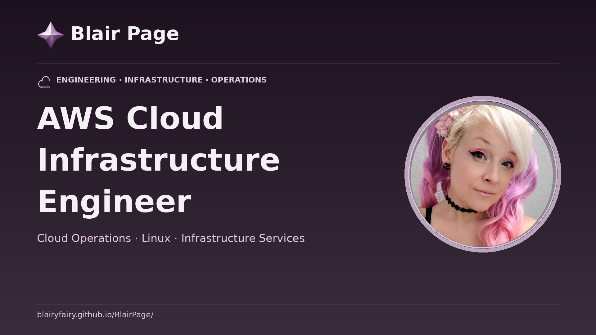

Ragnarok Online
Browser Gateway
A GitHub Pages interface for an actual roBrowserLegacy client, connected through a compatible WebSocket bridge to an authorized Ragnarok Online server. Built and branded by Blair Page (Blairyfairy).
Configure connectionOpen game area
Server connection profile
This form prepares a roBrowserLegacy configuration for a server you operate or are authorized to use. It does not bypass private-server encryption or create a proxy automatically.
No connection test performed.
To apply this profile to the actual client, copy the downloaded Config.local.js to the client deployment as described in Setup, then rebuild/redeploy. A profile stored here is not automatically injected into the upstream client.
Actual roBrowserLegacy game client
When the GitHub Actions client build succeeds, the client is published under /client/. Configure it with your authorized server profile first.
A missing client page means the upstream build did not complete. See setup and build diagnostics.
What the connection requires
Real game components
- roBrowserLegacy JavaScript/WebGL client
- rAthena, Hercules, or compatible server
- HTTPS asset service or legally obtained local game files
Network components
- WSS → TCP bridge with server allowlist
- Compatible packet version and encryption settings
- Accessible login, character, and map endpoints